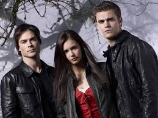

Por séculos, vampiros foram tratados como lendas. Mas quando histórias semelhantes surgem em diferentes culturas, épocas e lugares, fica a dúvida: e se nunca foram apenas mitos? Aqui, exploramos rumores, relatos e mistérios que fazem muitos acreditarem que eles existem.

os vampiros fazem parte de um dos mitos mais antigos e fascinantes da humanidade. Ao longo dos séculos, histórias sobre criaturas que se alimentam de sangue atravessaram diferentes culturas, misturando lendas, crenças e acontecimentos que alimentaram o imaginário popular.
Ao longo da história, diferentes povos criaram, suas próprias versões de criaturas semelhantes aos vampiros. Em cada cultura, elas possuem características únicas, mostrando como esse mito se espalhou pelo mundo de formas surpreendentes.
Muitas histórias sobre vampiros surgiram em épocas marcadas pelo medo de doenças e mores inexplicáveis. Sem respostas cientificas, diversas comunidades encontravam explicações em lendas e crenças populares.
Com o tempo, os vampiros passaram a aparecer em livros, filmes e séries, conquistando fãs no mundo todo.
A aparência dos vampiros varia entre as lendas, indo de monstros assustadores a figurad elegantes
Até hoje, o mito dos vampiros desperta curiosidades e inspira novas hitórias.
Cada cultura criou sua própria versão da lenda dos vampiros.
Os vampiros continuam sendo um dos maiores ìcones do terror e da fantasia.
Alho, cruzes, água benta e estacas de madeira são simbolos marcantes das lendas sobre vampiros.